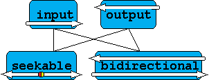
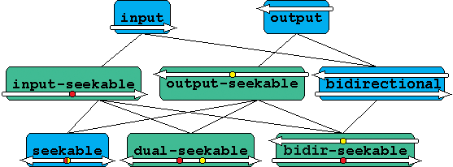

mode_ofIn order for a sequence of Filters and Devices to work together they must have certain properties in common. The most basic requirement is that they have the same character type; a collection of additional properties which Filters and Devices must share to be used for a particular purpose is called a mode.
The templates stream_buffer and stream are each parameterized by a mode, represented by a mode tag.
The Iostreams library supports eight modes, described in the next section (see also Figure 2). Of these, four are most import (see Figure 1). The two modes input and output are by far the most common. Readers new to the Iostreams library should feel free to concentrate primarily on these two modes.
Modes can be categorized in several ways:
The concepts representing optional behavior are not related to mode, and so need not be shared in order for a collection of Filters and Devices to work together:
Modes are summarized in the following table:
For more on the selection of modes, see the Rationale.
The following diagrams display the refinement hierarchies among modes.
|
Figure 1. The four most important modes  |
|
|||||||||||||||
|
Figure 2. The complete hierarchy of modes  |
||||||||||||||||
Each mode is represented by a mode tag, defined in the header <boost/iostreams/traits.hpp>. There are eight tags for the eight modes: input, output, bidirectional, input_seekable, output_seekable, seekable, dual_seekable and bidirectional_seekable.[1] As with standard library iterator category tags, the tag corresponding to a mode is convertible to each of the tags corresponding to modes which the first mode refines.
In addition, there is a pseudo-mode tag dual_use, which is used to define DualUseFilters — which can perform input or output, but not both simultaneously. This is useful to help reduce the number of different of Filter types. The Regular Expression Filters, Newline Filters and compression and decompression filters all have mode dual_use so that they may be used with either input or output streams.
mode_of
To determine the mode of a model of a Filter or Device, use the metafunction mode_of.
[1]It is traditional for tag structures to have names ending with "_tag". Since mode tags feature prominently in user code, this suffix was dropped to improve readability.
© Copyright 2008 CodeRage, LLC
© Copyright 2004-2007 Jonathan Turkanis
Distributed under the Boost Software License, Version 1.0. (See accompanying file LICENSE_1_0.txt or copy at http://www.boost.org/LICENSE_1_0.txt)